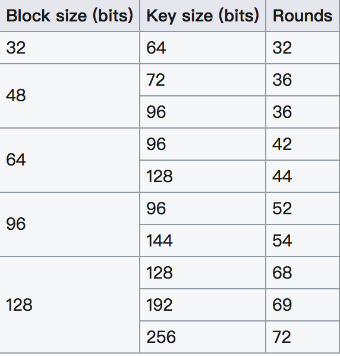
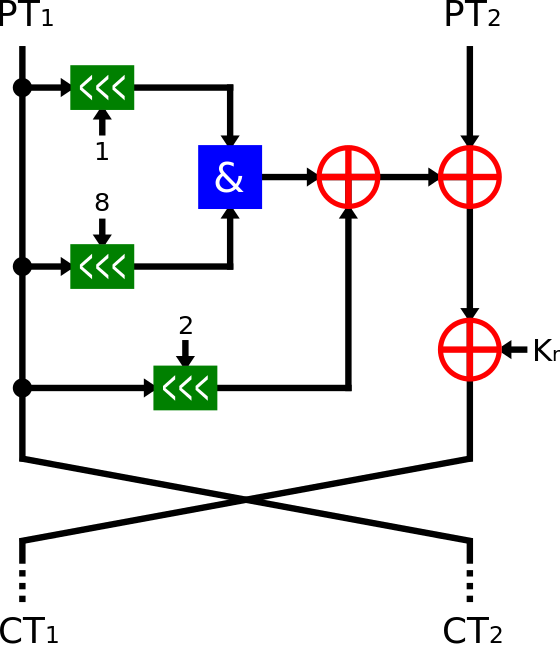
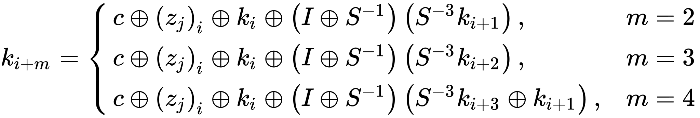

Simon and Speck Block Ciphers
这是一组姐妹轻量级加密。
Simon Block Cipher
基本介绍
Simon 块加密算法由 NSA 2013 年 6 月公布，主要在硬件实现上进行了优化。
Simon Block Cipher 是平衡的 Feistel cipher 加密，一共有两块，若每块加密的大小为 n bits，那么明文的大小就是 2n bits。此外，一般来说，该加密中所使用的密钥长度是块长度的整数倍，比如 2n，4n等。常见的 Simon 加密算法有

一般来说，Simon 算法称之为 Simon 2n/nm，n 为块大小，m 是块大小与密钥之间的倍数。比如说 Simon 48/96 就是指明文是 48 比特，密钥是 96 比特的加密算法。
此外，对于 Simon 块加密算法来说，每轮的加密过程一样，如下

当然，对于每一轮以及不同的 m 来说，密钥也会有所不同

其中， $z_j$ 是由 Linear Feedback Shift Register (LFSR) 生成的，虽然对于不同的 $z_j$ 的逻辑不同，但是初始向量是固定的。
| Constant |
|---|
| $z_{0}$=11111010001001010110000111001101111101000100101011000011100110 |
| $z_{1}$=10001110111110010011000010110101000111011111001001100001011010 |
| $z_{2}$=10101111011100000011010010011000101000010001111110010110110011 |
| $z_{3}$=11011011101011000110010111100000010010001010011100110100001111 |
| $z_{4}$=11010001111001101011011000100000010111000011001010010011101111 |
2017 SECCON Simon and Speck Block Ciphers
题目描述如下
Simon and Speck Block Ciphers
https://eprint.iacr.org/2013/404.pdf Simon_96_64, ECB, key="SECCON{xxxx}", plain=0x6d564d37426e6e71, cipher=0xbb5d12ba422834b5
从名字中可以看出密钥是 96 比特（12 byte），明文是 64 比特（8字节），而密钥已经给出了 8 个字节，只剩下四个字节未知。那我们可以使用暴力破解的方法。这里从 https://github.com/bozhu/NSA-ciphers/blob/master/simon.py 获取了一份 simon 加密算法。
具体如下
from pwn import *
from simon import SIMON
plain = 0x6d564d37426e6e71
cipher = 0xbb5d12ba422834b5
def compare(key):
key = "SECCON{" + key + "}"
key = key.encode('hex')
key = int(key, 16)
my_simon = SIMON(64, 96, key)
test = my_simon.encrypt(plain)
if test == cipher:
return True
else:
return False
def solve():
visible = string.uppercase + string.lowercase + string.digits + string.punctuation + " "
key = pwnlib.util.iters.mbruteforce(compare, visible, 4, method="fixed")
print key
if __name__ == "__main__":
solve()
结果如下
➜ 2017_seccon_simon_and_speck_block_ciphers git:(master) python exp.py
[+] MBruteforcing: Found key: "6Pz0"
参考文献
- https://en.wikipedia.org/wiki/Simon_(cipher)